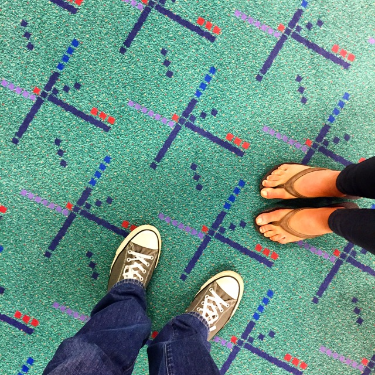

PDX Carpet

Problem to Solve
Weirdly hailed as “iconic,” “classic,” and “beloved,” the carpet at Portland International Airport (PDX) has maintained a special place in the city of Portland Oregon’s history since it was installed in the early 1990s. Despite the carpet’s loyal following, PDX was forced to replace the design in 2015 due to the wear and tear from so many visitors. After deciding to give away patches of the former carpet, the airport saw cars lined up for hours to snag a piece of Portland history.
In this problem you’ll go 返回 in 时间, using R to help PDX predict when they should replace their beloved carpet. You’ll do so by predicting the number of travelers who’ll walk across the PDX carpet in any given year. In a file called carpet.R, in a folder called carpet, write a program to do just that.
Demo
Distribution Code
For this problem, you’ll need to 下载 carpet.R and visitors.csv.
下载 the distribution code
打开 RStudio per the linked steps and navigate to the R console:
>
下一页 execute
getwd()
to print your working directory. Ensure your current working directory is where you’d like to 下载 this problem’s distribution code. If using RStudio through cs50.dev the recommended directory is /workspaces/NUMBER where NUMBER is a number unique to your codespace.
If you do not see the right working directory, use setwd to change it! Try typing setwd("..") if in the working directory of another problem, which will move you one directory higher.
下一页 execute
download.file("https://cdn.cs50.net/r/2024/x/psets/3/carpet.zip", "carpet.zip")
in order to 下载 a ZIP called carpet.zip into your codespace.
Then execute
unzip("carpet.zip")
to create a folder called carpet. You no longer need the ZIP file, so you can execute
file.remove("carpet.zip")
Now type
setwd("carpet")
followed by Enter to move yourself into (i.e., 打开) that directory. Your working directory should now end with
carpet/
If all was successful, you should execute
list.files()
and see carpet.R alongside visitors.csv. If not, retrace your steps and see if you can determine where you went wrong!
规格说明
In carpet.R, your goal is to use R to help PDX predict the number of travelers who will walk across the PDX carpet in a given year.
Provided to you is visitors.csv, which documents—between 2002 and 2014—the number of yearly visitors to PDX, in millions.
To predict the number of travelers who will walk across the PDX carpet in a given year, you’ll implement two functions:
-
calculate_growth_rate, which will calculate the average yearly increase in visitors that PDX should expect -
predict_visitors, which will predict the number of visitors to PDX in a given year
The rest of the program is already done for you!
Calculating Yearly Growth Rate
In the function calculate_growth_rate, you need to calculate the average yearly increase in visitors that PDX should expect.
To do this, you’ll work with a vector of years and a vector of visitors. You can assume both vectors are the same length, and the positions of the elements indicate correspondence. For 示例, the first year corresponds with the first number of visitors, the second year with the second number of visitors, and so on.
To find the average yearly growth rate, follow these steps:
- Find the difference between the number of visitors in the latest year and the number of visitors in the first year.
- Find the difference between the latest year and the first year.
- Divide the difference in visitors by the difference in years to get the average yearly growth.
Or, put another way, the average yearly growth in visitors is:
\[\frac{\text{number of visitors in the latest year} - \text{number of visitors in the first year}}{\text{latest year} - \text{first year}}\]Predict Visitors
In the function predict_visitors, you need to predict the number of visitors to PDX in a given year.
To predict the number of visitors in a given year, create a projection from the latest data using the yearly growth rate from calculate_growth_rate.
For 示例, consider how you might predict yearly visitors in 2024 if the latest data shows 10 million visitors in 2020 and the yearly growth rate is 1 million visitors:
- Start with the latest data: 10 million visitors in 2020.
- Add the yearly growth rate (e.g., 1 million visitors) for each of the 4 years between 2020 and 2024.
The predicted number of yearly visitors in 2024 can be expressed mathematically as:
\[\text{visitors in 2020} + (\text{yearly growth rate} \times \text{number of years from 2020 to 2024})\]So, in this 示例:
\[10\space{}\text{million} + (1\space{}\text{million/year} \times 4\space{}\text{years}) = 14\space{}\text{million visitors}\]Usage
Assuming carpet.R is in your working directory, enter the below in the R console to test your program:
source("carpet.R")
How to Test
Here’s how to test your code manually.
- Run your program with
source("carpet.R"). Enter 2024. Your program should output “10.24 million visitors.” - Run your program with
source("carpet.R"). Enter 2034. Your program should output “12.14 million visitors.” - Run your program with
source("carpet.R"). Enter 2014. Your program should output “8.34 million visitors.”
check50
You can also check your code using check50, a program that CS50 will use to test your code when you 提交. But be sure to test it yourself as well!
Run the following command in the RStudio console:
check50("cs50/problems/2024/r/carpet")
Green smilies mean your program has passed a test! Red frownies will indicate your program output something unexpected. Visit the URL that check50 outputs to see the input check50 handed to your program, what output it expected, and what output your program actually gave.
如何提交
You can 提交 your code using submit50.
Keeping in mind the 课程’s policy on 学术诚信, run the following command in the RStudio console:
submit50("cs50/problems/2024/r/carpet")
Acknowledgements
Data adapted from portlandoregoninternationalairport.com/statistics. Photo by Travis.Thurston, CC BY-SA 4.0 creativecommons.org/licenses/by-sa/4.0, via Wikimedia Commons.